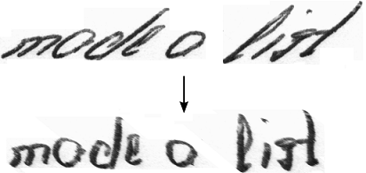

Welcome
My name is Harald Scheidl and I showcase my GitHub repositories on this website. Some of the codes are designed for productive use, others are more prototype-like and yet others are just for fun. If you want to contact me, here is my email:
python -c "print('%s_%s@hotmail.com'%('harald','scheidl'))"
Text recognition
SimpleHTR

A neural network which recognizes text contained in images. The network consists of CNN, RNN and CTC layers and is implemented using Python and TensorFlow. The network is kept small (outputs at most 32 characters) by purpose to be trainable on CPUs in reasonable time.
CTCWordBeamSearch

A CTC decoding algorithm which uses a dictionary to constrain recognized words, but at the same time allows arbitrary character strings (e.g. numbers) between words. Results are improved compared to other decoders if a suitable dictionary and/or language model is available. Implemented with C++ and Python, can be integrated into TensorFlow as a custom operation.
CTCDecoder

Some well-known CTC decoders implemented in Python: best path decoding, prefix search decoding, beam search decoding, token passing and lexicon search. Additionally, the CTC loss function is included (however, without any back-propagation).
DeslantImg
Deslanting sets text upright (i.e. minimizes the slant angle of text). This can be used if a text is written with a cursive writing style. It might or might not improve the recognition results (depends on the data, you have to do experiments to see if it makes sense in your case). Implemented in C++ and OpenCL.
WordSegmentation

The SimpleHTR model is kept small for performance-reasons and can recognize 32 characters at most. If you need to do text recognition on text-lines or sentences, you can first split the text-line into words and then feed each word separately into the classifier. This repository does exactly this: it segments a line of text into words. Implemented in Python.